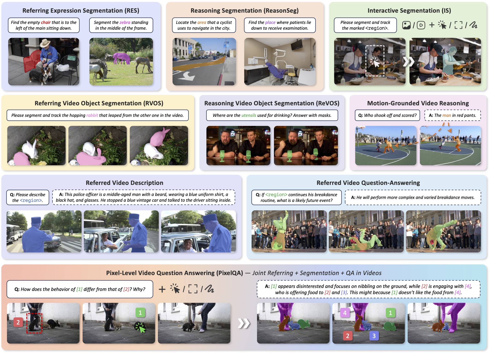
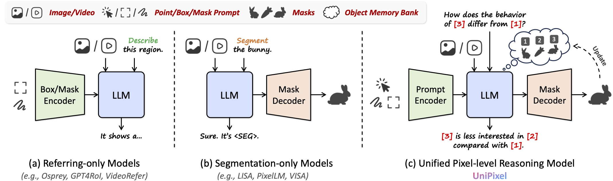
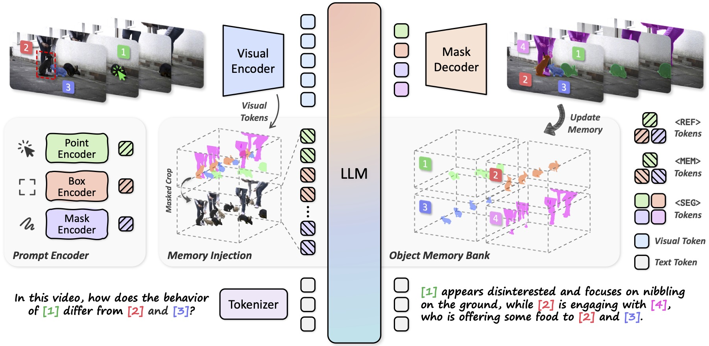
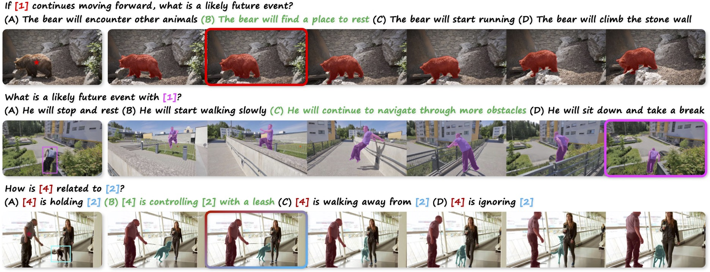
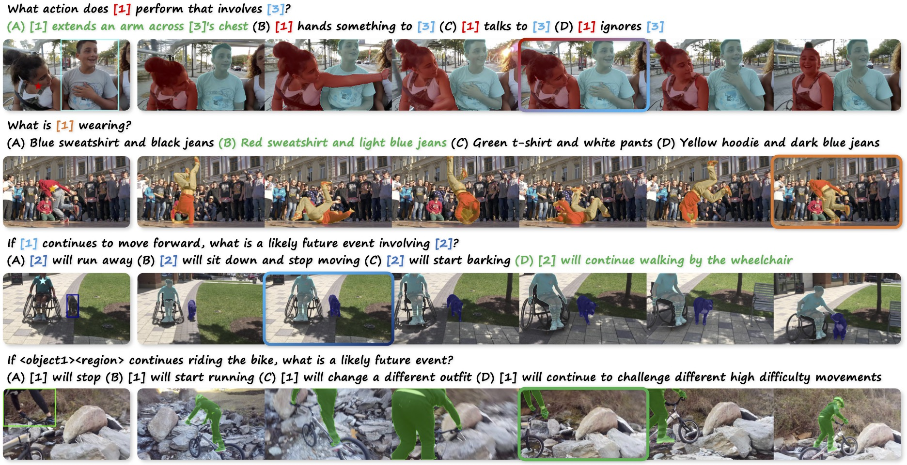
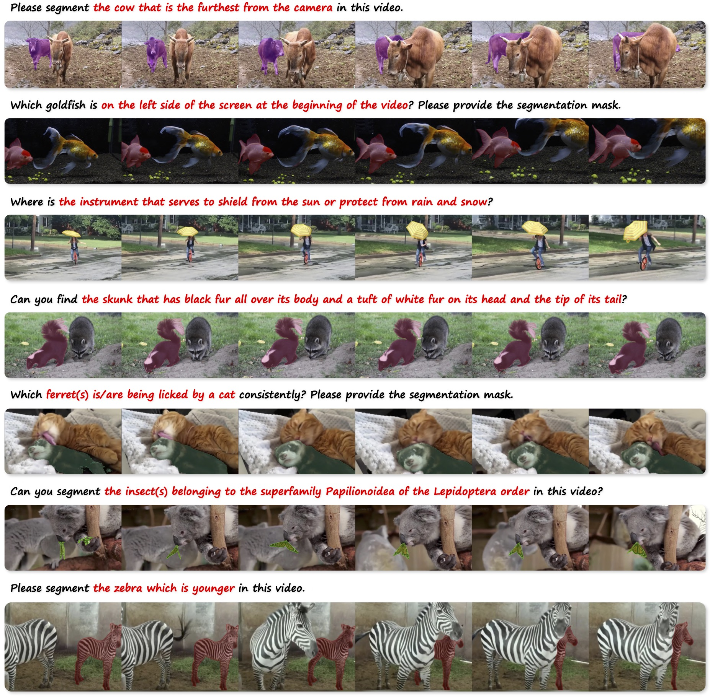
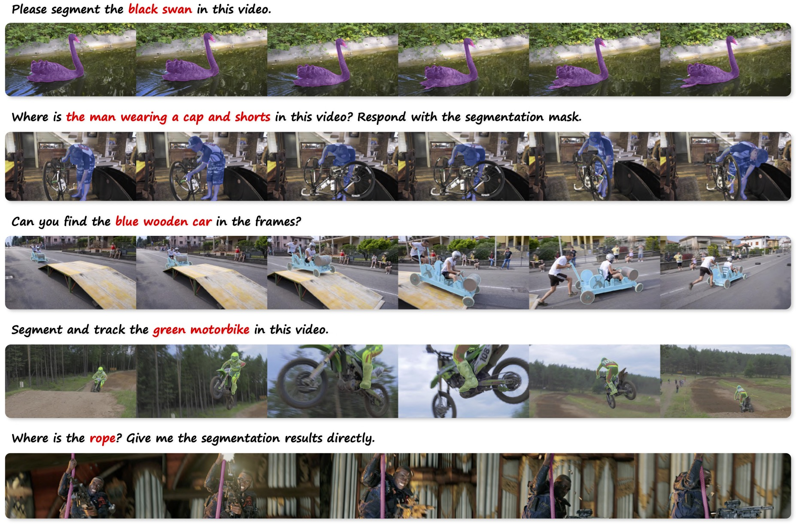
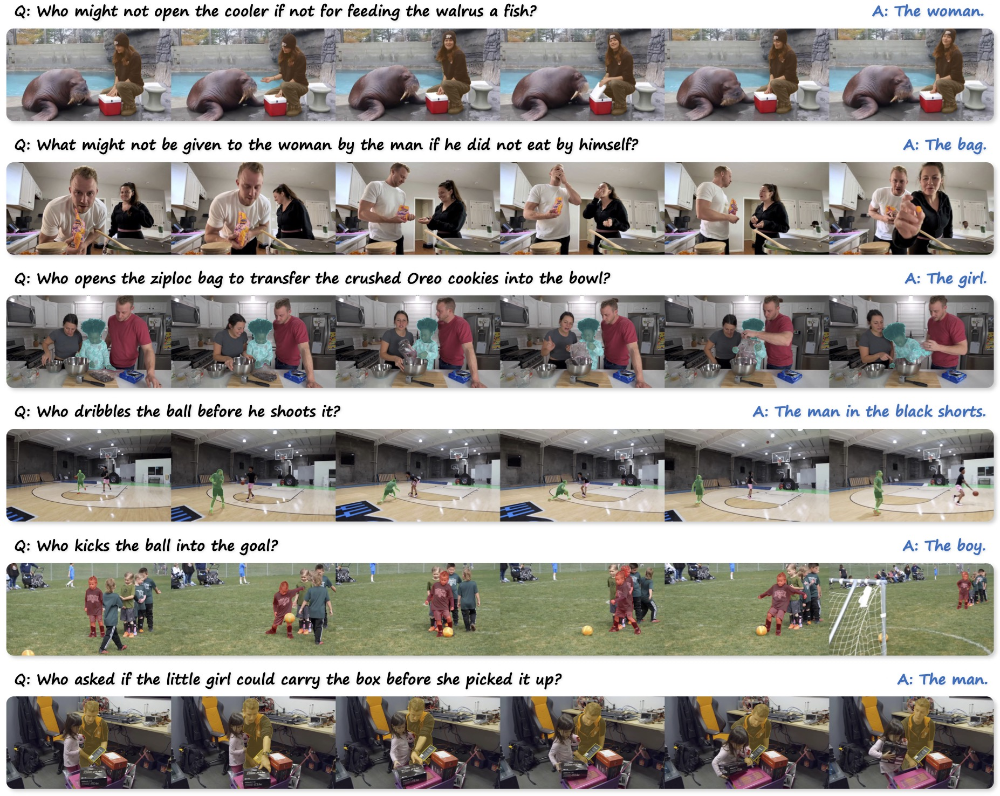
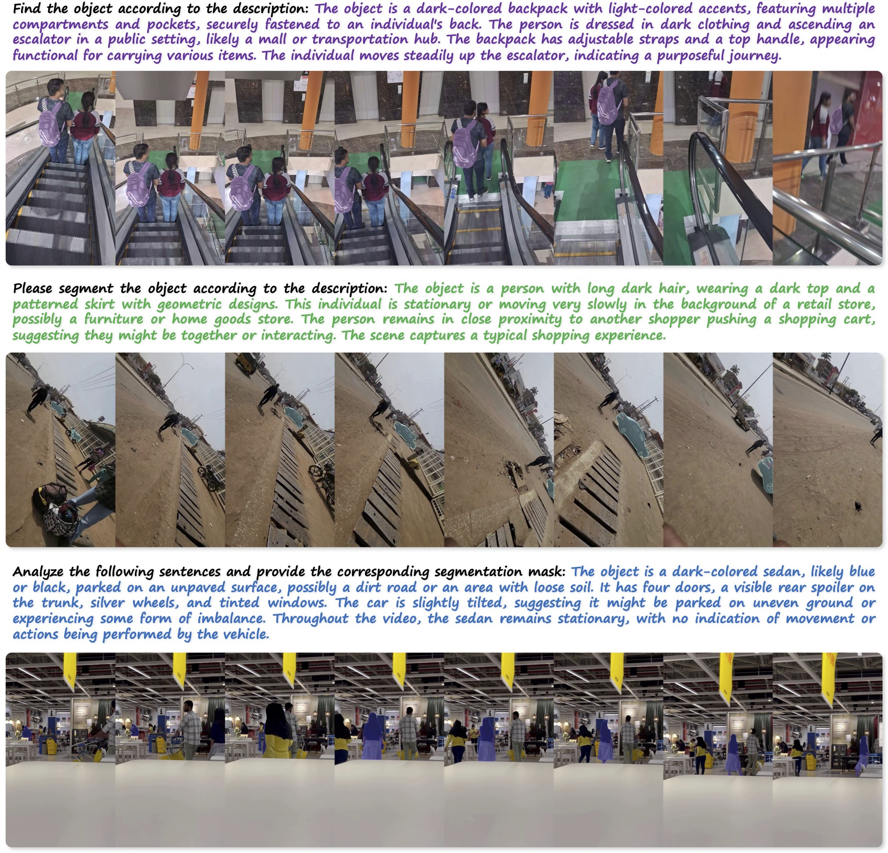
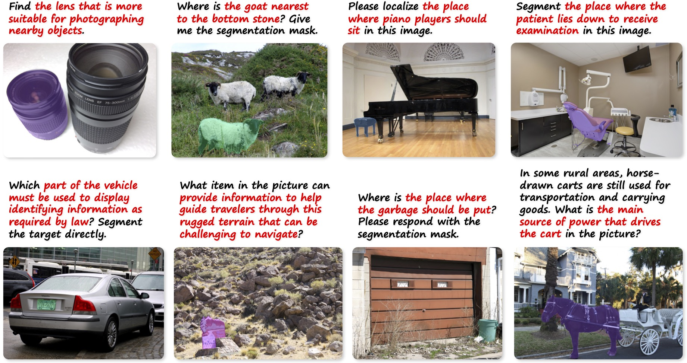

Recent advances in Large Multi-modal Models (LMMs) have demonstrated their remarkable success as general-purpose multi-modal assistants, with particular focuses on holistic image- and video-language understanding. Conversely, less attention has been given to scaling fine-grained pixel-level understanding capabilities, where the models are expected to realize pixel-level alignment between visual signals and language semantics. Some previous studies have applied LMMs to related tasks such as region-level captioning and referring expression segmentation. However, these models are limited to performing either referring or segmentation tasks independently and fail to integrate these fine-grained perception capabilities into visual reasoning.
To bridge this gap, we propose UniPixel, a large multi-modal model capable of flexibly comprehending visual prompt inputs and generating mask-grounded responses. Our model distinguishes itself by seamlessly integrating pixel-level perception with general visual understanding capabilities. Specifically, UniPixel processes visual prompts and generates relevant masks on demand, and performs subsequent reasoning conditioning on these intermediate pointers during inference, thereby enabling fine-grained pixel-level reasoning.
The effectiveness of our approach has been verified on 10 benchmarks across a diverse set of tasks, including pixel-level referring/segmentation and object-centric understanding in images/videos. A novel PixelQA task that jointly requires referring, segmentation, and question answering is also designed to verify the flexibility of our method.





PixelQA (Joint Referring + Segmentation + QA in Videos)

Reasoning Video Object Segmentation on ReVOS

Referring Video Object Segmentation on Ref-DAVIS17

Motion-Grounded Video Reasoning on GroundMoRe

Referring Video Object Segmentation with Long Descriptions on Ref-SAV

Reasoning Segmentation on ReasonSeg
@inproceedings{liu2025unipixel,
title={UniPixel: Unified Object Referring and Segmentation for Pixel-Level Visual Reasoning},
author={Liu, Ye and Ma, Zongyang and Pu, Junfu and Qi, Zhongang and Wu, Yang and Ying, Shan and Chen, Chang Wen},
booktitle={Advances in Neural Information Processing Systems (NeurIPS)},
year={2025}
}